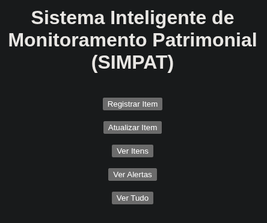
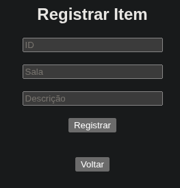
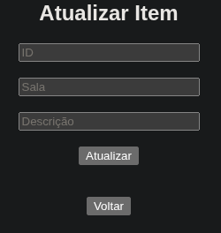
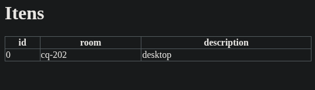
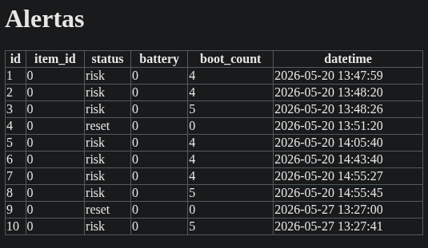
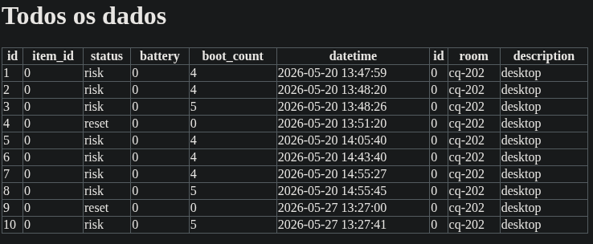
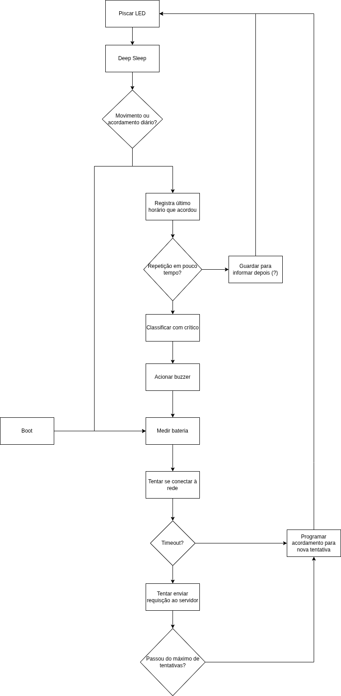
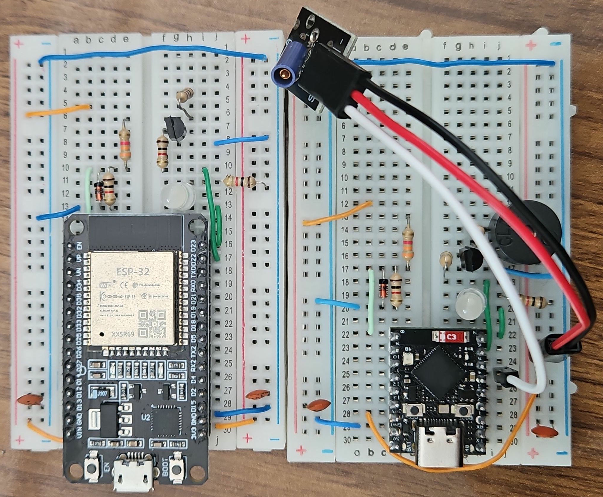
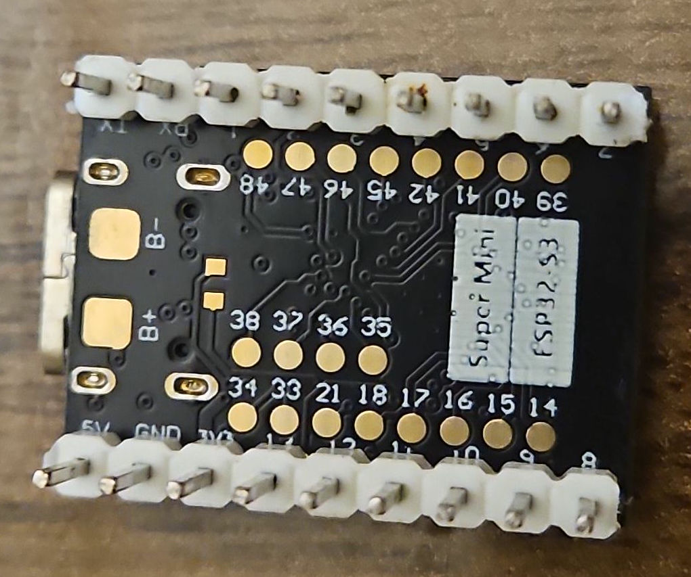

Foi possível implementar como planejado o servidor utilizando o framework FastAPI, já dentro de um contêiner Docker e utilizando scripts para facilitar a reprodução do ambiente. No servidor, foram criadas páginas simples com formulário para cadastro e atualização de itens e para visualização das tabelas de itens e alertas que estão armazenados no banco de dados SQLite.






Para este projeto, não parece ser necessário criar explicitamente uma fila para escrita no banco, pois o timeout de espera do SQLITE e escalonamento de acordamentos deve bastar.
Um único endpoint foi criado para receber requisições do microcontrolador, sendo diferenciados por um campo de texto do JSON. Foi adicionada uma string específica para quando o ESP for resetado, para que se possa saber quando ele foi primeiramente ligado e se houve interrompimento na alimentação.
Em relação ao ping, ainda não foi implementada a identificação, restando adicionar uma lógica para usar funções do próprio ESP para se saber se o acordamento veio da temporização ou do pino do sensor.
O acordamento temporizado já está sendo utilizado, de forma que o servidor envia um intervalo fixo em segundos até o próximo acordamento e o microcontrolador consegue extrair esse dado. Resta então criar um algoritmo para se calcular um intervalo customizado com base no histórico de alertas no banco, o que foi pensado e discutido no último encontro.

Durante as semanas de desenvolvimento, chegou a encomenda de algumas placas Super Mini com um ESP32-S3, que foi comprado com o objetivo de redução de espaço. Foi possível reproduzir com sucesso o circuito e código que estava sendo usado com uma placa de desenvolvimento padrão (DOIT DEVKIT V1). Ainda, por o S3 ser mais novo, ele promete consumir menos energia.


Outra encomenda que chegou foi o acelerômetro, que foi comprado por ser de baixíssimo consumo de energia e possibilitar uma melhor identificação de movimento. Um problema que foi encontrado é que o modelo não é o que mostra na serigrafia (LIS2DH), mas sim um LIS2SDH. Mesmo assim, foi possível testar o funcionamento através de verificação contínua. Porém, ainda não conseguimos utilizar os pinos de interrupçaõ que seria necessário para o projeto, por ter uma configuração complexa especificado em um datasheet da ST e não terem sido encontrados exemplos na internet para o modelo específico.